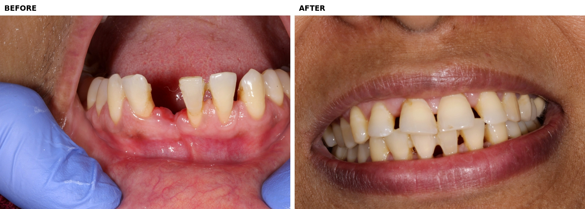

Replacement of Missing Teeth
Replace missing teeth with thoughtful, lasting care.
Restore function, appearance and confidence with a replacement option suited to your needs.
Missing teeth can affect the way you chew, speak and smile. Careful assessment helps determine the most appropriate way to restore the missing tooth while considering the health of the surrounding teeth and supporting tissues.

with a plan made
for you

IN SIMPLE WORDS
What does replacing a missing tooth involve?
Replacing a missing tooth means restoring the space created by tooth loss using a suitable dental solution.
The right option depends on several factors, including the number and position of missing teeth, the condition of neighbouring teeth, supporting tissues and your individual dental needs.
A careful examination allows the treatment options to be discussed before deciding on the most appropriate approach.
REPLACEMENT OPTIONS
Different situations call for different solutions.
Tooth replacement is not a one-size-fits-all treatment. The appropriate option depends on your individual dental condition and treatment requirements.
Dental implants
An implant-based replacement may be considered when a missing tooth needs to be replaced with a fixed restoration supported within the jaw.
Dental bridges
A bridge can replace a missing tooth by using neighbouring teeth or other appropriate support as part of the restoration.
Removable dentures
Removable tooth replacement may be considered when several teeth are missing or when a removable solution is appropriate.
Multiple missing teeth
When several teeth are missing, treatment planning considers the overall condition of the mouth rather than looking at each space in isolation.
Front tooth replacement
Replacing a visible front tooth requires attention to appearance, shape, colour and the surrounding natural teeth.
Back tooth replacement
Replacement of back teeth also considers chewing function, bite relationships and the condition of neighbouring teeth.
WHY REPLACEMENT MATTERS
Restoring a missing tooth is about more than appearance.
A carefully planned replacement can help restore everyday function while supporting a balanced, healthy smile.
Restore chewing
Replacing missing teeth can help restore everyday chewing function.
Support your smile
Tooth replacement can help restore the appearance of spaces created by tooth loss.
Consider surrounding teeth
Treatment planning considers the condition and position of neighbouring teeth.
Plan for long-term care
Replacement is planned together with appropriate maintenance and oral hygiene.
OUR APPROACH
Understand what is missing first. Then plan the right replacement.
Tooth replacement begins with understanding your individual dental situation before selecting an appropriate treatment option.
Examine your teeth and gums
We assess the missing space, neighbouring teeth, gums and supporting structures before treatment is planned.
Understand your needs
Your concerns, expectations, oral function and individual dental situation are considered together.
Discuss suitable options
Appropriate replacement options are discussed so that you understand the available approaches before making a treatment decision.
Plan maintenance
Long-term care includes appropriate oral hygiene, professional review and maintenance of the replacement restoration.
YOU MAY BE WONDERING
Missing teeth questions, answered simply.
Depending on your dental situation, replacement may involve an implant-supported restoration, bridge or removable option. The suitable approach is determined after assessment.
Yes. A single missing tooth can often be considered separately, although the condition of the surrounding teeth and supporting tissues also needs to be assessed.
Implant treatment is not automatically suitable for every patient. Suitability depends on factors such as the condition of the mouth, supporting tissues and overall treatment requirements.
Several missing teeth require broader treatment planning. The position of the spaces, remaining teeth, bite and supporting tissues are considered together.
Treatment time varies considerably depending on the replacement option and individual clinical requirements. A personalised timeline can be discussed after assessment.
The appropriate option is determined after examining your teeth, gums and supporting structures and discussing your individual needs and expectations.
READY TO DISCUSS YOUR OPTIONS?
Start with an examination. Plan your replacement with confidence.
If you have a missing tooth or several missing teeth, a careful examination can help you understand your options before deciding on treatment.